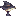
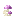
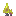
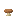
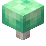
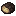

#caupona:mushroom
物品标签 · 9 个已收录成员
标签成员 (9)
 棕色蘑菇
棕色蘑菇minecraft:brown_mushroom
 红色蘑菇
红色蘑菇minecraft:red_mushroom

荧光蘑菇eternal_starlight:glowing_mushroom闪光蘑菇
eternal_starlight:shining_mushroom

攀岩菇eternal_starlight:bouldershroom

海黏菇eternal_starlight:marimold

香菇natures_spirit:shiitake_mushroom

荧光菇darkerdepths:glowshroom

松露environmental:truffle
使用该标签的配方
无